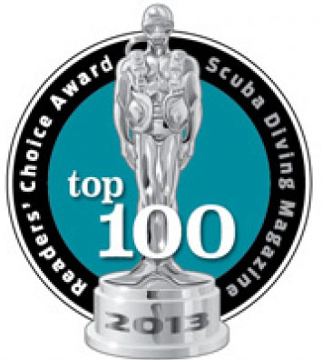
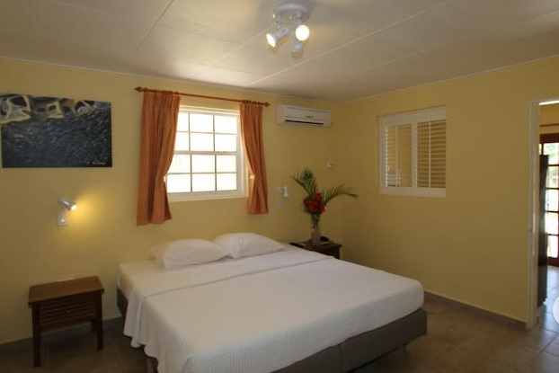

- Calendar
- Education
- Beginners
- Beyond The Basics
- Freediving
- Prepared Diver
- Beyond the Edge
- Go Pro
- Experienced Diver
- Kids Programs
- Boy Scouts
- Camp Emerald Bay Videos
- About Camp Emerald Bay Catalina
- SCUBA BSA (Discover Scuba Diving) Partial Day
- Rugged Scuba Diver
- Rugged Oceanographers
- Rugged Rescue Divers
- Rugged Specialty Programs (Partial Day/Night)
- Discover Local Diving Programs (Partial Day/Night)
- Discover Snorkeling and PADI Skin Diver (Partial Day/Night)
- Pro Diver Programs
- Educational Series
- University Programs
- Travel
- Dive Travel
- World-Wide Diving
- So-Cal Destinations
- Local LA Dive Sites
- About Local LA Dive Sites
- Avalon (Wreck)
- Big Rock Beach
- Broad Beach
- Carbon Beach
- Corral Canyon Beach
- County Line Beach
- Deer Creek Beach
- El Matador Beach
- El Pescador Beach
- Escondido Beach
- Geffens Beach
- La Piedra Beach
- Las Tunas Beach
- Latigo Beach
- Leo Carrillo Beach
- Little Dume Beach
- Malibu Pier/Surfrider Beach
- Nicholas Canyon Beach
- Old Malibu Road Beach
- Palawan (Wreck)
- Paradise Cove Beach
- Point Dume - Westward Beach
- Star of Scotland (Wreck)
- Sunset Beach
- Topanga Beach
- Veterans Park Beach
- Boat Charters
- Special Dives & Events
- Gear
- Store
- Gallery
- About Us
- Blog
Travel
World-Wide Diving

Bonaire
Saturday, April 26 to Saturday, May 3, 2014 Highlights:
WHAT: Malibu Divers Adventure
WHEN: April 26 - May 3, 2014
WHERE: Buddy Dive Resort, Kralendijk, Caribbean Netherlands (Bonaire)
COST: $1250 per person based on double occupancy, $1995, single occupancy (airfare not included)
NOTE: 7 night trip (8 days including travel time) Divers and non-divers welcome!
Join Malibu Divers, for a 7 night tropical escape to Buddy Dive Resort. We will explore some of Bonaire's most famous and exhilarating dive sites in Bonaire. Divers will see first hand why Bonaire is known as a diver's paradise and receives top honors as the:
Saturday, April 26 to Saturday, May 3, 2014 Highlights:
#1 Best Shore Diving Destination
#1 in Best Macro Diving
#1 Best Beginner Diving
It also ranked #2 for Best Overall Destination and Best Marine Environment. Bonaire is also ranked #3 for Best Overall Diving and #4 for Best Visibility.
 Professional photographer and Course Director, Barbara Gentile-Crary will be on hand offering underwater photo consultation and image critiques to help improve your underwater photos. Divers will also have the option of adding more boat dive trips each day to explore more of the remote sites (at an additional cost).
Professional photographer and Course Director, Barbara Gentile-Crary will be on hand offering underwater photo consultation and image critiques to help improve your underwater photos. Divers will also have the option of adding more boat dive trips each day to explore more of the remote sites (at an additional cost).
You will experience Bonaire and Buddy Dive Resort with us. An unhurried, unspoiled natural paradise offering spectacular sunsets, gentle breezes and crystal clear, turquoise waters. Buddy's is a resort where you can DIVE DIVE DIVE, take part in a multitude of activities or just sit back, relax and enjoy the atmosphere. At Buddy Dive, their casual atmosphere, personable staff, spacious accommodations and a dive operation that has something for every diver: comfortable boats, complete rental and retail center, exceptional staff, and a unique "Drive Thru" with a two-lane air/Nitrox fill station. No matter which apartment you are staying in, you're never further than a giant stride away from our popular and lively house reef which is perfect for diving and snorkeling, day and night.
ABOUT THIS TRIP

This photo of Buddy Dive is courtesy of TripAdvisor
Malibu Divers Trip Package highlights and activities includes:
- Buddy Dive Resort - 1 Bedroom Apartment Units fully equipped kitchens, furnished living area, and private balcony, two swimming pools
- 7 days rental vehicle included (double cabin pickup truck)
- 8 days, 7 nights, 6 days of diving
- 1 Boat dive per day, unlimited shore diving, FREE Nitrox upgrade included
- American style breakfast buffet daily
- Welcome drink, "Manager's Run Punch Party"
- Airport transfers in Bonaire
- All government taxes

The Package does NOT include:
- International/Domestic Round-trip Airfare. Group airfare maybe available.
- Marine Park fee $25
- Additional boat dives
- Beverages and Meals outside of above
- Gratuities
- Travel/Dive Insurance
- Additional dives not activities
- Personal expenses
- Passport or visa fees, if applicable (non-US travelers are responsible for acquiring a visa if needed)
7 night land-based dive package $1250 per person, double occupancy includes resort and diving. Please contact us for the discounted rate for non-divers and for the price to upgrade.
NORTH AMERICA FLIGHT INFORMATION
Delta Airlines offers a weekly Saturday non-stop flight from Atlanta to Bonaire and return. RECOMMENDED!
United Airlines offers several non-stop weekly flights from both Houston and Newark, and all flights should be considered seasonal. This means that during periods of low demand, the airline may decide to withhold services until such time as demand is higher. There can be additional flights added to their schedule during times of peak demand. For more information about the schedule from both Newark and Houston, visit the United web site.
Insel Air operates a weekly rotation from Miami to Bonaire with a change of planes in Curacao. For reservations on Insel Air, travelers from the United States should call toll free 1-800-386-4800, or consult their professional travel counselor. More information on Insel Air can be obtained at http://www.fly-inselair.com or by contacting the Insel Air call center on Curacao at + 5999-737-0444. To reach the Insel Air offices on Bonaire at the airport, call 717-2004/2008, 786-6750, or 785-3076. Their office at Flamingo Airport is open from 7:00 AM to 8:00 PM daily.
Delta Airlines offers a weekly Saturday non-stop flight from Atlanta to Bonaire and return. RECOMMENDED!
United Airlines offers several non-stop weekly flights from both Houston and Newark, and all flights should be considered seasonal. This means that during periods of low demand, the airline may decide to withhold services until such time as demand is higher. There can be additional flights added to their schedule during times of peak demand. For more information about the schedule from both Newark and Houston, visit the United web site.
Insel Air operates a weekly rotation from Miami to Bonaire with a change of planes in Curacao. For reservations on Insel Air, travelers from the United States should call toll free 1-800-386-4800, or consult their professional travel counselor. More information on Insel Air can be obtained at http://www.fly-inselair.com or by contacting the Insel Air call center on Curacao at + 5999-737-0444. To reach the Insel Air offices on Bonaire at the airport, call 717-2004/2008, 786-6750, or 785-3076. Their office at Flamingo Airport is open from 7:00 AM to 8:00 PM daily.
** If you need assistance, we can help you with arrangements through PADI Travel.
Note: you are responsible for you own air transportation and to and from LAX. The Malibu Divers trip begins and ends at Bonaire.

This photo of Buddy Dive is courtesy of TripAdvisor
TRIP REQUIREMENTS
- Passport must be valid for at least 6 months beyond your expected trip return date.
- Trip Release of Liability Waiver Requirement: Every registered guest will receive a Trip Waiver that must be completed prior to the trip.
- Dive Accident Insurance: Every diver on this trip is required to have Diver Accident Insurance coverage for an out-of-country accident including medical flight evacuation costs through Divers Alert Network or other dive accident insurance agency.
- Trip Insurance: We strongly recommended that you purchase additional trip cancellation and interruption coverage to help defray costs arising from unforeseen events. No one plans on an emergency, but you can prepare for one. Carefully read any insurance policy before purchase to make sure it covers your specific needs. There are several companies that offer travel insurance.
TERMS & CANCELLATION POLICY
Terms: Malibu Divers act only as an organizer and expeditor of this trip for the sole purpose of offering a service to its clients. We do not sell diver accident insurance or trip cancellation and interruption insurance. We are giving you information about insurance coverage as a service only. We are not a licensed travel agency. We solicit the assistance of licensed and reputable travel and insurance agents to assist us on your behalf.
Cancellation Policy:
• If you must cancel, the deposit is non-refundable. Incremental payments are non-refundable unless we are able to fill your vacated space at the full purchase price.
• If we are unable to fill your spot on the trip, all incremental money paid toward the trip will be forfeited.
• Should you fail to make incremental payments by the posted due dates, we reserve the right to cancel your reservation and sell your spot to another person.
• No refunds of deposits made prior to non-payment of an incremental payment will be issued.
What You Need to Know About Bonaire and Buddy Dive Resort
Bonaire, a mostly volcanic island surrounded by a corral reef in the southern region of the Caribbean Sea, is consistently rated as one of the best places to visit and dive. It is part of the ABC islands of Aruba, Bonaire, and Curaçao and is special municipality within the country of the Netherlands. Also part of Bonaire and to the west of the main island is the uninhabited islet of Klein Bonaire. Official language is Dutch but English and Spanish is spoken everywhere, and the native language is Papiamentu which is mixture of Dutch, Spanish, French, English, Portuguese, African, etc.
Buddy Dive Resort: Featuring 2 outdoor pools and an on-site dive shop, the Buddy Dive Resort is located right in front of a popular diving spot in Kralendijk. All accommodations have free Wi-Fi and sea views. Each air-conditioned studio and apartment at the Buddy Dive Resort features cable TV, a bathroom with a shower and a well-equipped kitchen. Apartments also have a living room. At Buddy Dive Resort, there is a poolside bar and 3 international restaurants. You can also find shops, restaurants and bars in central Kralendijk, a 10-minute drive away.
Location: 30 miles (48 km) east from Curacao; 50 miles (80 km) north of Venezuela and 86 miles (129 km) east of Aruba, outside of the Caribbean hurricane belt.
Size & Geography: 24 miles (39 km) long by 3-7 miles wide, 112 square miles (290 km2). Highest elevation is Brandaris Hill, 784 feet (240 meters).
Climate: Yearly average temperature is 82°F (27.8°C); water temperature of 80°F (26.7°C); rainfall of 22 inches (56 cm) mostly during the night and in burst during the rainy season (November though January); humidity of 76%. Sunny, all year round. Windy side of the island is the east side. High season is usually December through April.
Airport: Flamingo International Airport or Bonaire International Airport (IATA: BON, ICAO: TNCB) is an international airport located at Kralendijk, Bonaire, Netherlands. Airlines operating into and out of: Arke Fly, Continental Airlines, Delta Air Lines, Divi Divi Air, Dutch Antilles Express, Insel Air, KLM, Tiara Air. Bring your passport.
Scuba Diving: Caribbean's best easy diving and more good shore dives than anywhere else. Rated #1 dive spot in the Caribbean Sea.Novice, Intermediate and Advanced levels of diving.  
Resort Amenities and Other Highlights:
- World Class Diving
- Swimming Pool
- Relaxing by the pool
- Bar and restaurant
- Sailing
- Cycling
- Kayaking
- Windsurfing
- Fishing
- Kid's Activities
- Bird watching
- Yachting
- Night Life
- Shopping
- Sightseeing
- Spa/Fitness
- Snorkeling
- Horseback Rides
- Kite boarding, and more.

This photo of Buddy Dive is courtesy of TripAdvisor
To reserve your space contact:
Malibu Divers
info@malibudivers.com
(310) 456-2396
Facebook Feed
Blog Feed
- Peace Boat to Anacapa: Sea Lions, Dolphins & Whales Oh My! 06-Feb-2016
- What Does Drowning look like? 26-Apr-2015
- No Cell Phones Allowed 04-Apr-2015
- Pro Scuba Training Lets You See the Real Picture 26-Mar-2015
- Love Diving? Take Your Passion One Step Further: Become a Rescue Diver 20-Mar-2015
- What Goes Down Must Come Up 02-Mar-2015
- So You Want To Be A Scuba Instructor? Read This Story 30-Jan-2015
- Not Just A Summer Vacation idea with Kids 23-May-2014
- Pro Scuba Training for a Career You Love 09-May-2014
- Freediving For Fun 30-Apr-2014
Subscribe to Newsletter
For the latest news, scuba deals, & information & Get our FREE Trip Packing Checklist
Get Social!